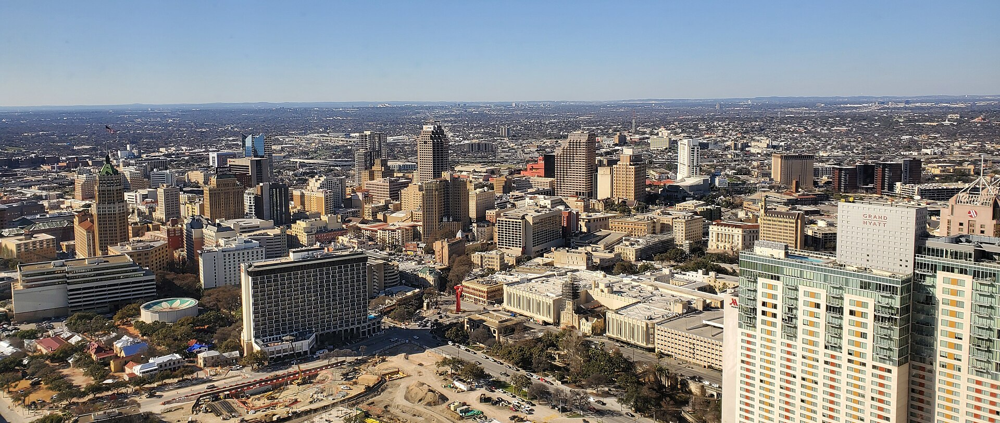

Facts about San Antonio
- Population: 1,472,909
- Year Incorporated: 1837
- Region: South and Central Texas
- Classification: Urban/Metro
- Average income level of the city compared to Texas: Lower
- Rank: 7th

Attractions
| Hotels |
Family Fun |
Historical |
| Emily Morgan Hotel |
Riverwalk |
Alamo |
| Menger Hotel |
San Antonio Zoo |
San Fernando Cathedral |
| Fairmount Hotel |
Sea World |
Majestic Theatre |